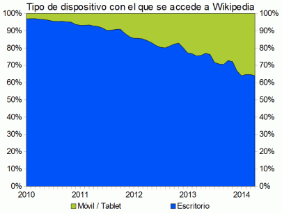

Los datos de la Wikipedia
Wikipedia también publica estadísticas elaboradas a partir de un muestreo de sus logs de acceso (uno de cada mil accesos). La gráfica siguiente muestra la proporción de usuarios que acceden a la web utilizando ordenadores de une escritorio o dispositivos móviles. Según estos datos, uno de cada cinco usuarios accederían ya a la web desde un dispositivo móvil. Según estos datos, uno de cada tres usuarios accederían ya a Wikipedia desde un dispositivo móvil.
